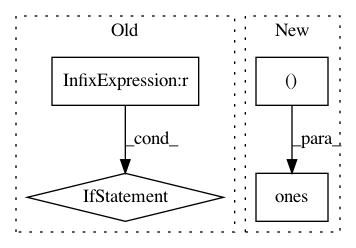

d663fda862df1c831e7f93f1e3feb2e189a1b9ef,tests/keras/layers/test_recurrent.py,,test_regularizer,#Any#,125
Before Change
layer.build(shape)
output = layer(K.variable(np.ones(shape)))
K.eval(output)
if layer_class == recurrent.SimpleRNN:
assert len(layer.losses) == 3
if layer_class == recurrent.GRU:
assert len(layer.losses) == 9
if layer_class == recurrent.LSTM:
assert len(layer.losses) == 12
After Change
bias_regularizer="l2")
layer.build((None, None, 2))
assert len(layer.losses) == 3
layer(K.variable(np.ones((2, 3, 2))))
assert len(layer.losses) == 3
In pattern: SUPERPATTERN
Frequency: 3
Non-data size: 4
Instances
Project Name: keras-team/keras
Commit Name: d663fda862df1c831e7f93f1e3feb2e189a1b9ef
Time: 2017-02-16
Author: francois.chollet@gmail.com
File Name: tests/keras/layers/test_recurrent.py
Class Name:
Method Name: test_regularizer
Project Name: keras-team/keras
Commit Name: 11685f68d52266188abc117687493c80a5580718
Time: 2015-06-25
Author: lchen3@gmail.com
File Name: keras/layers/recurrent.py
Class Name: MutatedRNN_1
Method Name: __init__
Project Name: keras-team/keras
Commit Name: 7da1523053f2e5f4fa15c87e019b3244c8653a53
Time: 2015-12-09
Author: francois.chollet@gmail.com
File Name: tests/keras/test_normalization.py
Class Name:
Method Name: